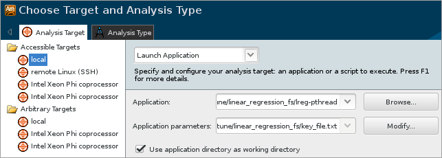
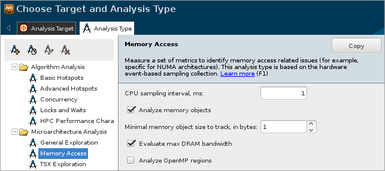

After building the sample
application, configure the
Intel®
VTune™ Amplifier
for the Memory Access analysis as follows:
After building the sample
application, configure the
Intel®
VTune™ Amplifier
for the Memory Access analysis as follows:
- Create a VTune Amplifier project, which is a container for an analysis target and analysis type configuration and data collection results.
- Specify your target application for analysis.
- Select and run the Memory Access analysis to identify and resolve false sharing.
Create a Project
Set the EDITOR or VISUAL environment variable to associate your source files with the code editor (like emacs, vi, vim, gedit, and so on). For example:
$ export EDITOR=gedit
Execute the amplxe-vars script, located in the product installation directory, to set up the environment.
Run the amplxe-gui script launching VTune Amplifier GUI.
Click the
 menu button and select
New > Project... to create a new project.
menu button and select
New > Project... to create a new project.
The Create a Project dialog box opens.
Specify the project name lreg-pthread that will be used as the project directory name and click the Create Project button.
By default, the VTune Amplifier creates a project directory under the $HOME/intel/amplxe/projects directory and opens the New Amplifier Result tab with the Analysis Target sub-tab active.
Specify Analysis Target
To specify your application as analysis target, configure the Analysis Target tab:
From the left pane, select the local type of the analysis system from the Accessible Targets group.
From the right pane, select the Launch Application type of the analysis target drop-down menu.
In the Application field, click the Browse button and navigate to the lreg-pthread application.
- In the Application Parameters field, enter <sample_code_dir>/key_file.txt.
Click the Choose Analysis button on the right to switch to the Analysis Type tab.

Configure and Run Memory Access Analysis
In the Analysis Type tab, select the Microarchitecture Analysis > Memory Access analysis type from the analysis tree on the left.
In the configuration pane on the right, select the Analyze memory objects option to enable the instrumentation of memory allocation/de-allocation and map hardware events to memory objects.
Set the Minimal memory object size to track, in bytes spin box to 1 to capture all memory allocations.
Click the Start button on the right to run the analysis.

VTune Amplifier launches the lreg-pthread application that takes the key_file.txt as input and generates the summary statistics of points to give the linear approximation before exiting. When the application exits, depending on how the collection run was configured, collection is completed and the VTune Amplifier enters the finalization process, where data are coalesced, symbols are reconnected to their addresses, and certain data are cached to speed the display of results.
Note
To make sure the performance of the application is repeatable, go through the entire tuning process on the same system with a minimal amount of other software executing.